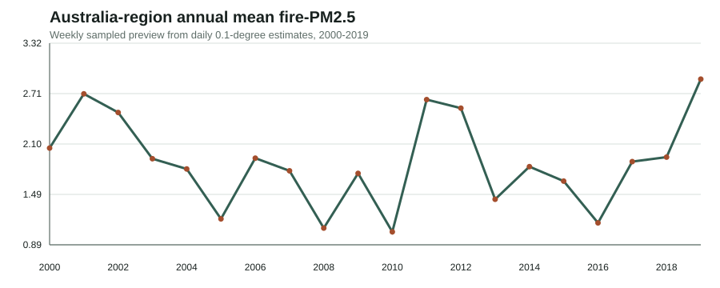
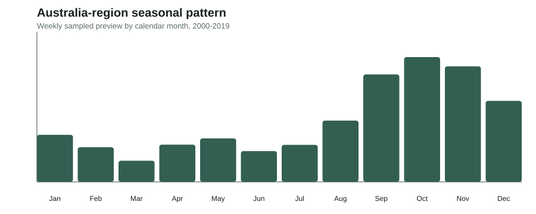
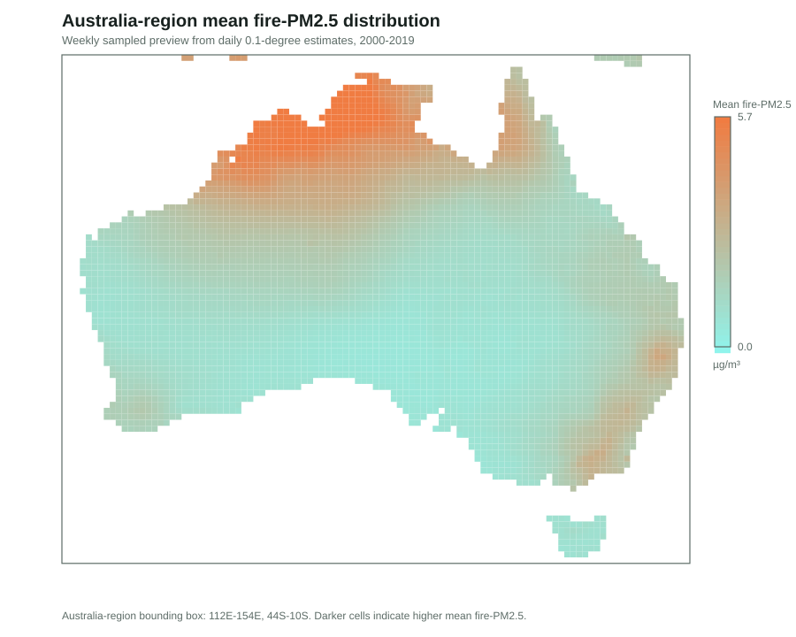
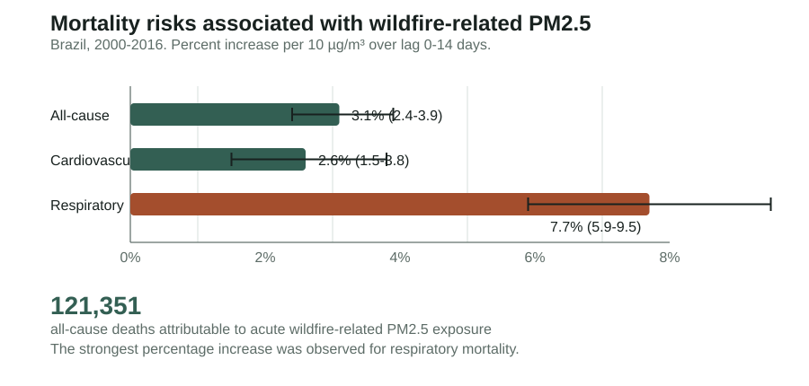
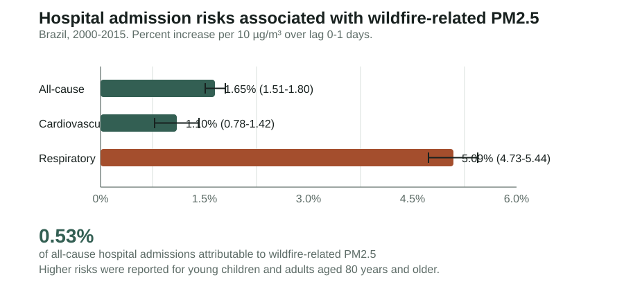

Input domains
Modern bushfire-smoke PM2.5 products, historical fire indicators, meteorological reanalysis, land cover, topography, and socio-demographic predictors.
June 2026 - June 2027
Developing a national framework to reconstruct long-term bushfire-smoke PM2.5 exposure and support future health, climate adaptation, and safer-air policy research.
Project Summary
Dr Tingting Ye is an environmental epidemiologist based at Monash University. Her research focuses on the health impacts of bushfire smoke, air pollution, heat, and other climate-related environmental exposures. Through this fellowship project, she will develop a national framework to reconstruct historical bushfire-smoke PM2.5 exposure across Australia. The project will generate a research-ready exposure resource to support future health studies, climate adaptation, and safer-air policy. The work combines exposure modelling, remote sensing, geospatial data integration, and environmental epidemiology to strengthen evidence on long-term smoke exposure and health risk.
Framework
Modern bushfire-smoke PM2.5 products, historical fire indicators, meteorological reanalysis, land cover, topography, and socio-demographic predictors.
Candidate reconstruction models will be tested in the modern data-rich period before extension to selected earlier periods.
Preliminary annual, seasonal, and cumulative smoke exposure metrics will be derived to support downstream epidemiological applications.
Prior Work & Data Foundation
This fellowship builds on prior collaborative work published in Nature, where Tingting Ye and colleagues estimated global population exposure to landscape fire air pollution from 2000 to 2019.
Read the Nature articleThe project will draw on daily 0.1-degree global fire-PM2.5 estimates from 2000 to 2019 and focus analytical development on Australia. This modern-period resource provides a key benchmark for testing reconstruction workflows before extension to earlier historical periods.



These exploratory figures use a weekly sampled preview of the daily 0.1-degree fire-PM2.5 estimates for the Australia-region bounding box. They are intended to illustrate the project's data foundation; full-resolution analyses and diagnostics are maintained separately. The exposure data can support collaborative research applications. Interested collaborators are welcome to contact the project lead.
Selected Leading-Author Studies

This nationwide study showed that acute wildfire-related PM2.5 exposure was associated with higher all-cause, cardiovascular, and especially respiratory mortality. Per 10 µg/m³ increase, respiratory mortality rose by 7.7% over lag 0-14 days, and 121,351 all-cause deaths were attributable to acute exposure during 2000-2016.
Read the article
This nationwide time-series study found that short-term wildfire-related PM2.5 exposure increased hospital admissions, with the largest relative increase for respiratory admissions. The burden was measurable nationally, and higher risks were observed for young children and adults aged 80 years and older.
Read the articleProgress
Finalise analysis planning, assemble core datasets, establish the modelling workflow, begin modern-period reconstruction, and complete initial diagnostics.
Demonstrate a harmonised modelling database, active workflow documentation, preliminary testing, feasibility of historical extension, supervision contributions, and collaborative publication progress.
Extend the reconstruction framework, quantify uncertainty, produce the first working exposure resource, and prepare manuscript, conference, and grant outputs.
Disclosure Approach
This public page intentionally presents project aims, workflow structure, data foundations, and milestones. Detailed data inventories, model diagnostics, preliminary results, and review evidence are maintained separately until they are ready for broader release.
Contact
Dr Tingting Ye
Environmental epidemiologist, Monash University
This project is supported by a Centre for Safe Air Postdoctoral Fellowship.